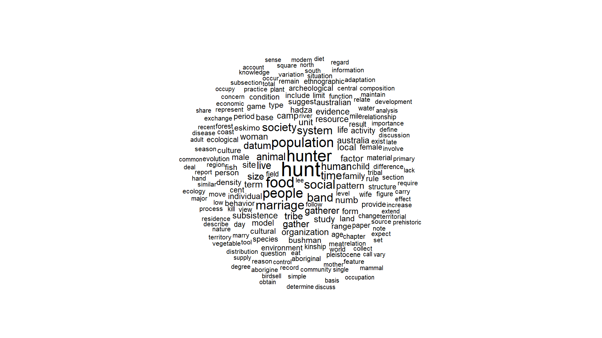
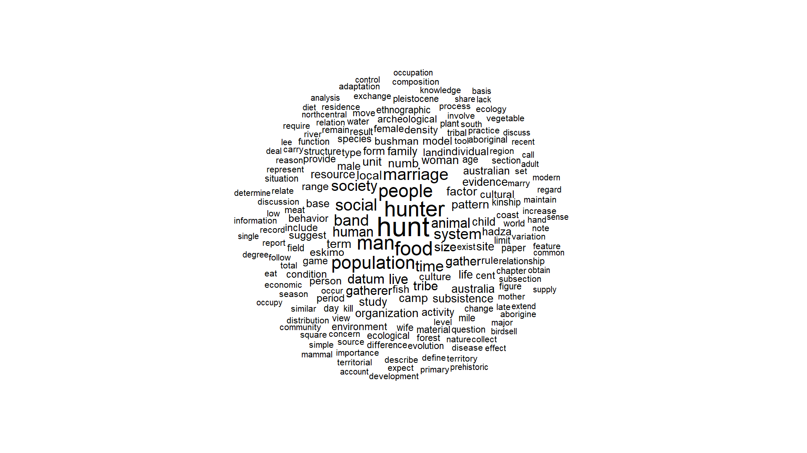
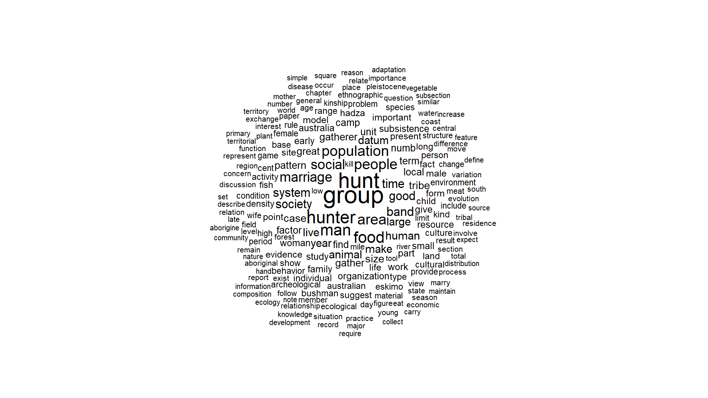

rm(list = ls())
library(tidytext)
library(textstem)
library(tidyverse)
library(wordcloud)
library(RColorBrewer)
if (!file.exists("MtH.txt")){
download.file("https://ia801705.us.archive.org/30/items/ManTheHunter/Man%20the%20Hunter_djvu.txt",
destfile = "MtH.txt")
}
mth_unmodified <-readLines("MtH.txt")Man the Hunter, Natural Language Processing
Loading data
This just loads the relevant packages for text analysis and downloads the text of the book from the internet archive.
Processing the text
This is cleaning up the text. Mainly removing the line breaks and rejoining words that were split between lines with a hyphen, taking out the page numbers and making all of the special characters (like apostrophes) consistent
preface_starts <- 75
part1_starts <- 746
references_starts <- 36991
raw <- mth_unmodified[part1_starts:references_starts]
modified_text <- paste(raw, collapse = "\n") %>%
gsub("['\u2018\u2019\u201A\u201B\u0060\u00B4]", "'", .) %>% #standardize apostrophes
gsub("\r\n", "\n", .) %>% #fix line endings
gsub("([a-z])-\\s*\n\\s*([a-z])", "\\1\\2", .) %>% #remove hyphenated lines
gsub("(?m)^\\s*\\d+\\s*$", "", ., perl = TRUE) %>%# cut page numbers
gsub("huntergatherers?\\b", "hunter gatherer", .) %>%
gsub("huntinggathering", "hunting gatherering", .)
# textTolkenizing
After cleaning, the text is usually processed a little more. One process is called lemmantization, or making words into their roots (like cats becoming cat or running becoming run). In this context, it does a pretty good job, leaving both hunt (the verb and hunter (the noun) as separate.
The second step is removing stop words: common words that are unrelated to the sentiment or topic. This could be things like “is, he, or, and” These tend to be standard lists, sometimes with additional ones added. The package I use here has three different ones that you can either use together or individually. The problem is one in particular (an older one called onix, that was meant for information retrieval and searching) contains the words “man” and “men”. It does not contain “woman” or “women” The reason for this is presumably that man/men was thought to be shorthand for “human” so if you are searching a text for “man’s evolution” the word “man” is not important to the actual search and could lead you astray. Kind of classic gender bias in language and text. The thing in this context though is that it should have been really obvious since its the title of the book. And I should note, that I did a quick scan of the main stop word lists and onix is the only one that has man/men on it.
So, in this part, I am making the stop word list in three ways. 1: just using one of the main packages for language processing as is. One, taking that list and removing “man” and “men” from it but otherwise leaving it as is. And last, just not using the onix stopword list.
base_stopwords <- stop_words
cut_stopwords <- stop_words |>
filter(!(word %in% c("man", "men")))
no_onix_stopwords <- stop_words |> filter(lexicon != "onix")
bag_of_words <- tibble(text = modified_text) %>%
unnest_tokens(word_orig, text) %>%
mutate(word_orig = gsub("'s$", "", word_orig)) %>% #removing possessives
filter(nchar(word_orig) > 2) %>%
mutate(word = lemmatize_words(word_orig)) %>%
filter(!str_detect(word, "[0-9]")) #removing things that are just numbers
full_sum_table <- bag_of_words %>%
count(word, sort = T)%>%
mutate(orig = word %in% base_stopwords$word,
no_onix = word %in% no_onix_stopwords$word,
man_back = word %in% cut_stopwords$word)%>%
filter(!orig | !no_onix | !man_back)Word Clouds
Here i just made a way to do the word cloud so it kind of looks like the one in the paper
make_word_cloud <- function(table, stopword_col, seed = 44,
width = 1600, height = 900,
file = NULL) {
top200 <- table %>%
filter(!{{ stopword_col }}) %>%
slice_head(n = 200)
par(mar = c(0, 0, 0, 0)) # zero margins
if (!is.null(file)) {
png(file, width = width, height = height, res = 150)
}
set.seed(seed)
wordcloud(
words = top200$word,
freq = top200$n,
min.freq = 1,
max.words = 200,
random.order = FALSE,
rot.per = 0.0,
colors = "black",
scale = c(2, 0.5),
random.color = FALSE
)
if (!is.null(file)) dev.off()
}make_word_cloud(table = full_sum_table, stopword_col = orig)
For the original data (above), it looks basically like what came before
make_word_cloud(table = full_sum_table, stopword_col = man_back)
If we just add man back in, it looks a little better. “Man” is mentioned around 500 times and is the 4th most common word
make_word_cloud(table = full_sum_table, stopword_col = no_onix)
If we just skip the onix stop word list entirely it gets even a little more interesting. One of the other main words that was removed in their analysis was “group” which is actually the most common word, and kind of relevant in this context. Here are all the words that were removed from their word cloud, but were mentioned more than 50 times in the original text. Some are fine, but many (e.g. group, man, member, area) contain valuable contextual information for an analysis of human settlement. Using the onix stopword list removed all of that.
full_sum_table %>%
filter(n >50)%>%
filter(!no_onix & orig) %>%
pull(word) [1] "group" "man" "area" "good" "year" "make"
[7] "large" "case" "great" "find" "work" "part"
[13] "small" "early" "give" "present" "point" "important"
[19] "fact" "kind" "show" "long" "high" "problem"
[25] "member" "place" "state" "interest" "general" "young"
[31] "number" "order" "clear" "generally" "back" "thing"
[37] "today" Quick topic classification
To go a little further, we can see if the comparisons between man/women and hunter/gatherer are roughly equal. If both of these topics were both broadly discussed at the conference and in the volume despite the name, then we would expect roughly equal numbers and in a similar variety of contexts. To be clear, some of the processing above and the tokenizing splits the compound word hunter-gatherer ro two separate words (same with hunting-gatherering).
To start, If the only time those words were in there were when hunter-gatherer was mentioned as a single thing, we’d expect them to be roughly equal.
# Key words to compare
key_words <- c("man", "men", "woman", "women",
"hunt", "hunter", "gather", "gatherer")
full_sum_table %>%
filter(word %in% key_words) %>%
mutate(concept = case_when(
word %in% c("man", "men") ~ "man/men",
word %in% c("woman", "women") ~ "woman/women",
word %in% c("hunt", "hunter") ~ "hunt/hunter",
word %in% c("gather", "gatherer") ~ "gather/gatherer"
)) %>%
group_by(concept) %>%
summarise(total = sum(n))%>%
arrange(-total)# A tibble: 4 × 2
concept total
<chr> <int>
1 hunt/hunter 1538
2 man/men 568
3 gather/gatherer 517
4 woman/women 220Hunt/hunting is mentioned about three times as often as gather/gathering (1538 to 568) and man/men is mentioned more than twice as often as woman/women (517 to 220).
But the context that these words are mentioned also plays a role “hunter-gatherer” is a compound word and, we also need to see how many times “gathering” is mentioned independent of that.
#Looking at how often gatherer is mentioned without hunter
words_nearby <- bag_of_words %>%
filter(!word %in% no_onix_stopwords$word) %>%
mutate(next_word = lead(word),
pre_word = lag(word)) %>%
filter(str_detect(word, "hunt|gath")) %>%
select(word_orig, pre_word, word, next_word)
# what precedes gatherer?
words_nearby %>%
filter(str_starts(word, "gath"))%>%
count(pre_word, word, sort = TRUE) %>%
head(5)# A tibble: 5 × 3
pre_word word n
<chr> <chr> <int>
1 hunter gatherer 232
2 hunt gather 135
3 food gatherer 21
4 food gather 12
5 woman gather 5# what follows hunter?
words_nearby %>%
filter(str_starts(word, "hunt"))%>%
count(word, next_word, sort = TRUE) %>%
head(5)# A tibble: 5 × 3
word next_word n
<chr> <chr> <int>
1 hunter gatherer 232
2 hunt gather 135
3 hunt people 35
4 hunt society 31
5 hunt human 30unique(words_nearby$word) [1] "hunter" "gatherer" "hunt" "gather"
[5] "huntingford" "huntinglearly" "foodgathering" "hunti"
[9] "gatherering" "gathering" "nethunters" "ungathered"
[13] "hunterprovider" "nonhunter" "grouphunting" "foodgatherers" #to simplify the output, casting all similar words together.
words_nearby <- words_nearby %>%
mutate(
word_s = case_when(
str_detect(word, "hunt") ~ "hunt",
str_detect(word, "gath") ~ "gather",
TRUE ~ word
),
pre_word_s = case_when(
str_detect(pre_word, "hunt") ~ "hunt",
str_detect(pre_word, "gath") ~ "gather",
TRUE ~ pre_word
),
next_word_s = case_when(
str_detect(next_word, "hunt") ~ "hunt",
str_detect(next_word, "gath") ~ "gather",
TRUE ~ next_word
)
)
tog_gath <- words_nearby %>%
filter(str_starts(word_s, "gath"))%>%
count(pre_word_s, word_s, sort = TRUE) %>%
mutate(percent = 100*n/sum(n))
tog_gath# A tibble: 96 × 4
pre_word_s word_s n percent
<chr> <chr> <int> <dbl>
1 hunt gather 371 70.5
2 food gather 33 6.27
3 woman gather 5 0.951
4 female gather 4 0.760
5 activity gather 3 0.570
6 datum gather 3 0.570
7 dependence gather 3 0.570
8 fish gather 3 0.570
9 man gather 3 0.570
10 people gather 3 0.570
# ℹ 86 more rows# what follows hunter?
tog_hunt_post <- words_nearby %>%
filter(str_starts(word_s, "hunt"))%>%
count(word_s, next_word_s, sort = TRUE) %>%
mutate(percent = 100*n/sum(n))
tog_hunt_post# A tibble: 577 × 4
word_s next_word_s n percent
<chr> <chr> <int> <dbl>
1 hunt gather 371 24.0
2 hunt people 36 2.33
3 hunt group 34 2.20
4 hunt human 32 2.07
5 hunt society 31 2.00
6 hunt large 25 1.62
7 hunt fish 22 1.42
8 hunt life 20 1.29
9 hunt live 20 1.29
10 hunt hunt 15 0.970
# ℹ 567 more rows# what comes before hunter?
tog_hunt_pre <- words_nearby %>%
filter(str_starts(word_s, "hunt"))%>%
count(pre_word_s,word_s, sort = TRUE) %>%
mutate(percent = 100*n/sum(n))
tog_hunt_pre# A tibble: 712 × 4
pre_word_s word_s n percent
<chr> <chr> <int> <dbl>
1 man hunt 37 2.39
2 live hunt 23 1.49
3 modern hunt 22 1.42
4 prehistoric hunt 21 1.36
5 study hunt 21 1.36
6 human hunt 16 1.03
7 net hunt 16 1.03
8 primitive hunt 16 1.03
9 hunt hunt 15 0.970
10 world hunt 14 0.905
# ℹ 702 more rowsSo, ~71 % of the 526 times gathering is mentioned it is immediately preceded by hunter,
but only ~24% of the 1,547 times hunting is mentioned it is not followed by gathering.
And the most common work to come before hunting is (obviously) “man” but its not all that common
Note: If anyone is interested in that one reference to “hunterprovider” with female after it as a possible counter example, i would suggest looking at the original manuscript. Its on page 302